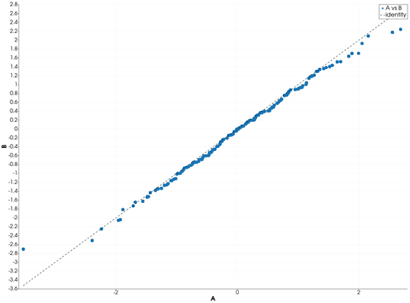
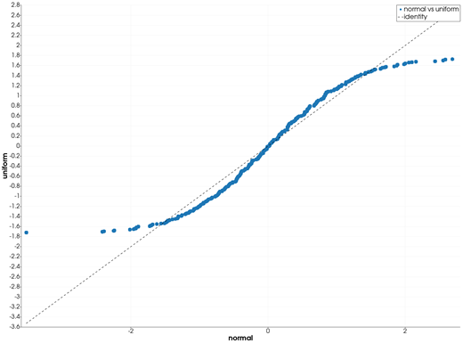
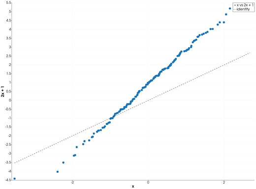

qqplot — Quantile-Quantile Plot
The qqplot icon on the X,Y Plot tool's gallery row plots the quantiles of the first two series of the current page against each other, with an identity line for reference. The plot goes on a new page; the series it was made from stay as they were. It follows GMT.jl's qqplot(x, y) with its default qqline=:identity, with the numbers from GMT.jl's own qqbuild.
Syntax
Draw the two samples as curves, then click qqplot:
p = plot(x)
plot!(p, y)Description
- The first series of the page is the sample
x, the second the sampley: their Y values. Their X values are not used, and any further series of the page is ignored. - With
nthe length of the shorter sample, both samples' quantiles are taken at thenprobabilities0, 1/(n-1), 2/(n-1), ..., 1— from each sample's minimum to its maximum — with Julia'squantile(linear interpolation between the sorted values). The samples need not be the same length. - Each pair of quantiles is one point, X from
xand Y fromy, drawn as circles with no line, in one series named"<x> vs <y>". The new page is called qqplot, and its axes are titled with the two series' names. - A dashed black line named
identityis the line Y = X, drawn from the smallest to the largest quantile ofx. Two samples of the same distribution lie along it. If they differ only in location and scale, the points lie along another straight line. - Values that are not finite (
NaN,Inf) are left out. A series with fewer than two values is skipped, and the next one takes its place. With fewer than two such series on the page, the icon says so and draws nothing.
Running the Examples
Paste each example into the iGMT window's Julia console, or into the Julia REPL after using InteractiveGMT, then click qqplot on the gallery row. No series needs to be selected: the icon takes the page's first two series.
The examples build their samples without random numbers: two sequences such as mod.(k .* 0.6180339887, 1) give values spread evenly over (0, 1) in no particular order, and the Box–Muller transform turns a pair of them into a standard normal sample.
Examples
Compare Two Samples of the Same Distribution
Two normal samples, of 300 and 150 values: the points follow the identity line.
k = 1:450
u1 = mod.(k .* 0.6180339887, 1)
u2 = mod.(k .* 0.4142135624, 1)
z = sqrt.(-2 .* log.(u1)) .* cos.(2π .* u2)
p = plot(z[1:300]; legend="A")
plot!(p, z[301:450]; legend="B")
Compare Two Different Distributions
A normal sample against a uniform one, both of mean 0 and variance 1: the points bend away from the line at both ends, where the uniform sample has no tails.
k = 1:300
u1 = mod.(k .* 0.6180339887, 1)
u2 = mod.(k .* 0.4142135624, 1)
z = sqrt.(-2 .* log.(u1)) .* cos.(2π .* u2)
p = plot(z; legend="normal")
plot!(p, sqrt(12) .* (u2 .- 0.5); legend="uniform")
Same Shape, Other Location and Scale
The second sample is the same distribution as the first, shifted by 1 and stretched by 2: the points lie along the line Y = 2X + 1, not along the identity.
k = 1:450
u1 = mod.(k .* 0.6180339887, 1)
u2 = mod.(k .* 0.4142135624, 1)
z = sqrt.(-2 .* log.(u1)) .* cos.(2π .* u2)
p = plot(z[1:300]; legend="x")
plot!(p, 1 .+ 2 .* z[301:450]; legend="2x + 1")
Input Arguments
x — first sample, the Y values of the page's first series: at least two finite numbers.
y — second sample, the Y values of the page's second series: at least two finite numbers.
See Also
qqnorm — Quantile-Quantile Plot Against the Normal · ecdfplot — Empirical Cumulative Distribution Plot · plot — 2-D Line Plot · X,Y Plot Tool